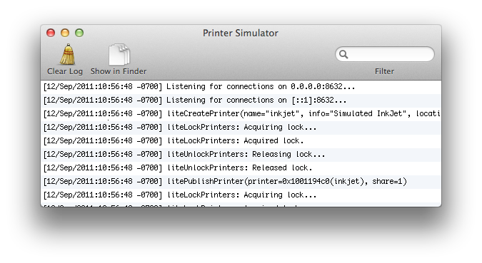

The Printer Simulator window shows the current status of the simulator, the options that are available, and current log information. The toolbar provides controls to start and stop the simulator, clear the log, and filter the log results.

The Printer Simulator Window
Click on the Start menu item in the Simulation menu or press ⌘-R to to start or stop the simulator.